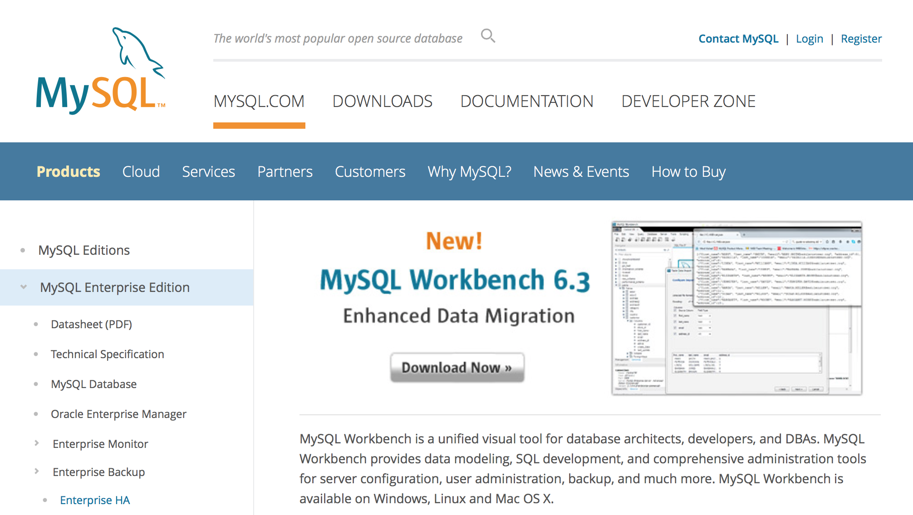

Install Mysql installation on cenos 7¶
การติดตั้ง mysql บน enterprise centos 7 สามารถเลือกติดตั้ง ได้จาก MySQL community yum repository หรือ mariadb
Install Reposioty¶
MYSQL community เปิด browser ไปที่
https://dev.mysql.com/downloads/repo/yum/
1 2 3 4 5 | wget https://dev.mysql.com/get/mysql57-community-release-el7-11.noarch.rpm
md5sum mysql57-community-release-el7-11.noarch.rpm
output
c070b754ce2de9f714ab4db4736c7e05 mysql57-community-release-el7-11.noarch.rpm
|
ตรวจสอบค่า output ออกมา
1 2 3 4 5 | sudo rpm -ivh mysql57-community-release-el7-11.noarch.rpm
sudo yum install mysql-server
sudo systemctl start mysqld
sudo systemctl enable mysqld
sudo systemctl status mysqld
|
output
1 2 3 4 5 6 7 8 9 10 11 | ● mysqld.service - MySQL Server
Loaded: loaded (/usr/lib/systemd/system/mysqld.service; enabled; vendor preset: disabled)
Active: active (running) since Mon 2018-02-12 04:10:30 UTC; 7min ago
Docs: man:mysqld(8)
http://dev.mysql.com/doc/refman/en/using-systemd.html
Main PID: 4378 (mysqld)
CGroup: /system.slice/mysqld.service
└─4378 /usr/sbin/mysqld --daemonize --pid-file=/var/run/mysqld/mysqld.pid
Feb 12 04:10:25 localhost.localdomain systemd[1]: Starting MySQL Server...
Feb 12 04:10:30 localhost.localdomain systemd[1]: Started MySQL Server.
|
security firewall¶
ตั้งค่า ไฟล์วอล ที่ พอร์ต 3306 โดยกำหนดให้กับ interface eth1 ใน zone truested
การ active โซนใน ไฟล์วอลจะเกิดขึ้นโดยอัตโนมัติทันทีที่มีการ add interace ให้แก่ โซน
ในคำสั่ง firewall-cmd จะต้อง ระบุบ --permanent ทุกครั้ง และจึงทำการ --reload
sudo systemctl start firewalld
sudo systemctl enable firewalld
sudo firewall-cmd --get-zones
sudo firewall-cmd --get-default-zone
sudo firewall-cmd --list-all
//output
public (active)
target: default
icmp-block-inversion: no
interfaces: eth0 eth1
sources:
services: dhcpv6-client ssh
ports:
protocols:
masquerade: no
forward-ports:
sourceports:
icmp-blocks:
rich rules:
sudo firewall-cmd --permanent --add-interface=eth1 --zone=trusted
sudo firewall-cmd --permanent --zone=trusted --add-source=192.168.30.0/24
sudo firewall-cmd --permanent --zone=trusted --add-port=3306/tcp
sudo firewall-cmd --reload
$ firewall-cmd --get-active-zones
//output
public
interfaces: eth0
trusted
interfaces: eth1
sources: 192.168.30.0/24
หลังการติดตั้ง installer ได้ทำการสร้าง temporary password ให้ตรวจสอบดังนี้
$ sudo grep 'temporary password' /var/log/mysqld.log
2018-02-12T04:10:28.290165Z 1 [Note] A temporary password is generated \
for root@localhost: ?eUbcipl:8E8
$ sudo mysql_secure_installation
Securing the MySQL server deployment.
Enter password for user root:
หลังจากกรอก รหัสชั่วคราวเรียบร้อย ระบบจะให้เราทำการเปลี่ยน password อีกครั้งword อีกครั้ง
The existing password for the user account root has expired. Please set a new password.
New password:
ให้กรอก password มีความยาว 12 character ประกอบด้วยอักษรตัวเลข ตัวใหญ่ ตัวเลข และ อักขระพิเศษ ระบบจะแสดงผลยืนยันความมั่นใจอีกครั้ง หากเรามัน่ใจให้ตอบ no
Output
Estimated strength of the password: 100
Change the password for root ? (Press y|Y for Yes, any other key for No) :
ยกเลิก anonymous users
... skipping.
By default, a MySQL installation has an anonymous user,
allowing anyone to log into MySQL without having to have
a user account created for them. This is intended only for
testing, and to make the installation go a bit smoother.
You should remove them before moving into a production
environment.
Remove anonymous users? (Press y|Y for Yes, any other key for No) : y
Success.
ยกเลิก root login remote
Normally, root should only be allowed to connect from
'localhost'. This ensures that someone cannot guess at
the root password from the network.
Disallow root login remotely? (Press y|Y for Yes, any other key for No) : y
Success.
By default, MySQL comes with a database named 'test' that
anyone can access. This is also intended only for testing,
and should be removed before moving into a production
environment.
remove test database
Remove test database and access to it? (Press y|Y for Yes, any other key for No) : y
- Dropping test database...
Success.
- Removing privileges on test database...
Success.
Reloading the privilege tables will ensure that all changes
made so far will take effect immediately.
reload
Reload privilege tables now? (Press y|Y for Yes, any other key for No) : y
Success.
All done!
Login¶
ทำการ login mysql -u root -p -h localhost
$ mysql -u root -p
Enter password:
Welcome to the MySQL monitor. Commands end with ; or \g.
Your MySQL connection id is 7
Server version: 5.7.21 MySQL Community Server (GPL)
Copyright (c) 2000, 2018, Oracle and/or its affiliates. All rights reserved.
Oracle is a registered trademark of Oracle Corporation and/or its
affiliates. Other names may be trademarks of their respective
owners.
Type 'help;' or '\h' for help. Type '\c' to clear the current input statement.
mysql>
แต่หาก login ด้วย -h 192.168.30.10 จะไม่สามารถ ที่เข้าถึงได้ use root
$ mysql -u root -p -h 192.168.30.10
Enter password:
ERROR 1130 (HY000): Host '192.168.30.1' is not allowed to connect to this MySQL server
กลับไปยัง เครื่อง mysql database
mysql> CREATE USER 'dbadmin'@'localhost' IDENTIFIED BY 'P@ssw0rd';
Query OK, 0 rows affected (0.00 sec)
mysql> CREATE USER 'dbadmin'@'192.168.30.1' IDENTIFIED BY 'P@ssw0rd';
Query OK, 0 rows affected (0.00 sec)
mysql> CREATE DATABASE mydatabase;
mysql> use mysql;
Database changed
mysql> SELECT host,user FROM user;
+--------------+---------------+
| host | user |
+--------------+---------------+
| 192.168.30.1 | dbadmin |
| localhost | dbadmin |
| localhost | mysql.session |
| localhost | mysql.sys |
| localhost | root |
+--------------+---------------+
5 rows in set (0.00 sec)
Grant permission¶
GRANT type_of_permission ON database_name.table_name TO ‘username’@'localhost’;
type_of_permission สามารถเลือกได้ดังนี้
- ALL PRIVILEGES- as we saw previously, this would allow a MySQL user full access to a designated database (or if no database is selected, global access across the system)
- CREATE- allows them to create new tables or databases
- DROP- allows them to them to delete tables or databases
- DELETE- allows them to delete rows from tables
- INSERT- allows them to insert rows into tables
- SELECT- allows them to use the SELECT command to read through databases
- UPDATE- allow them to update table rows
- GRANT OPTION- allows them to grant or remove other users’ privileges
mysql> GRANT ALL PRIVILEGES ON mydatabase.* to 'dbadmin'@'localhost';
Query OK, 0 rows affected (0.00 sec)
mysql> GRANT ALL PRIVILEGES ON mydatabase.* to 'dbadmin'@'192.168.30.1';
Query OK, 0 rows affected (0.00 sec)
mysql> FLUSH PRIVILEGES;
mysql> SHOW GRANTS FOR dbadmin@localhost;
+-----------------------------------------------------------------+
| Grants for dbadmin@localhost |
+-----------------------------------------------------------------+
| GRANT USAGE ON *.* TO 'dbadmin'@'localhost' |
| GRANT ALL PRIVILEGES ON `mydatabase`.* TO 'dbadmin'@'localhost' |
+-----------------------------------------------------------------+
2 rows in set (0.00 sec)
ทดสอบการ login จาก 192.168.30.1 (host) โดยการเปิด terminal ขึ้นมาใหม่จากเครื่อง host
$ mysql -u dbadmin -p -h 192.168.30.10
Enter password:
Welcome to the MySQL monitor. Commands end with ; or \g.
Your MySQL connection id is 14
Server version: 5.7.21 MySQL Community Server (GPL)
Copyright (c) 2000, 2018, Oracle and/or its affiliates. All rights reserved.
Oracle is a registered trademark of Oracle Corporation and/or its
affiliates. Other names may be trademarks of their respective
owners.
Type 'help;' or '\h' for help. Type '\c' to clear the current input statement.
mysql> SHOW databases;
+--------------------+
| Database |
+--------------------+
| information_schema |
| mydatabase |
+--------------------+
2 rows in set (0.00 sec)
Install MYSQL Workbench¶
เป็นเครื่องมือสำหรับการบริหารจัดการ ฐานข้อมูล โดยไปยัง https://www.mysql.com/products/workbench/ Download ใช้งานได้ทั้ง window, linux , mac
